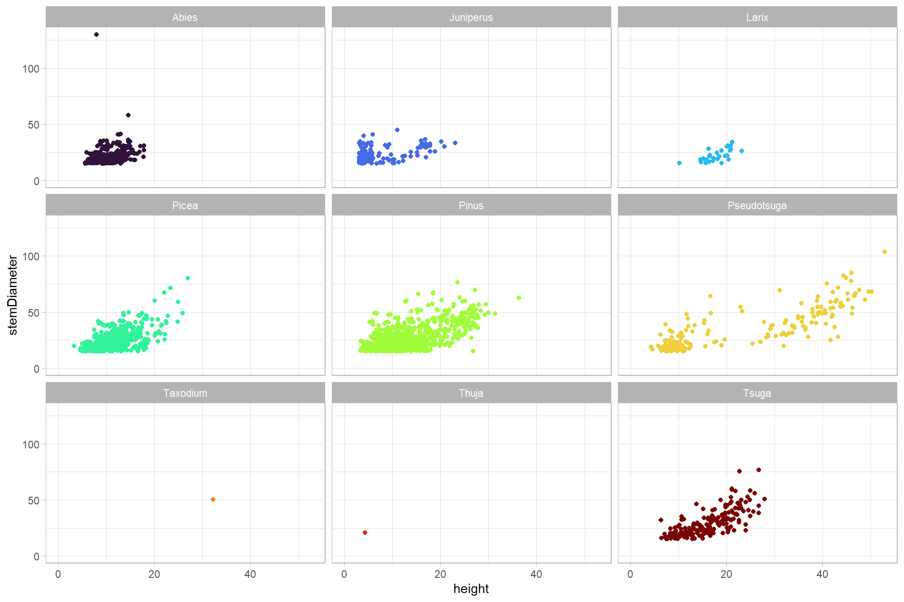
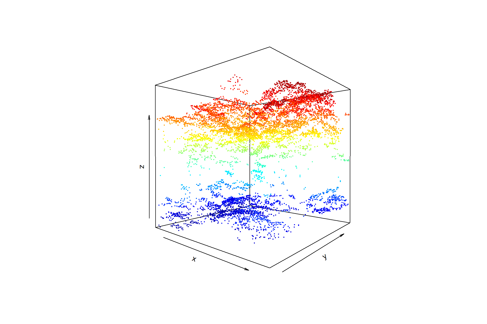
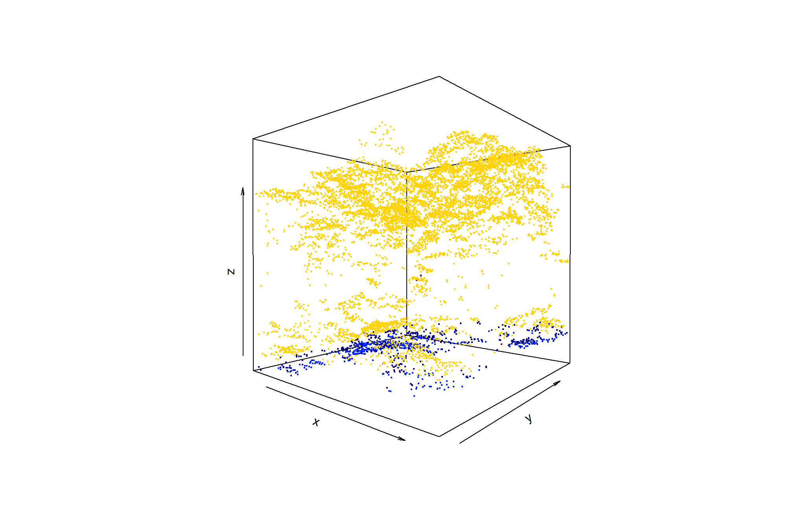
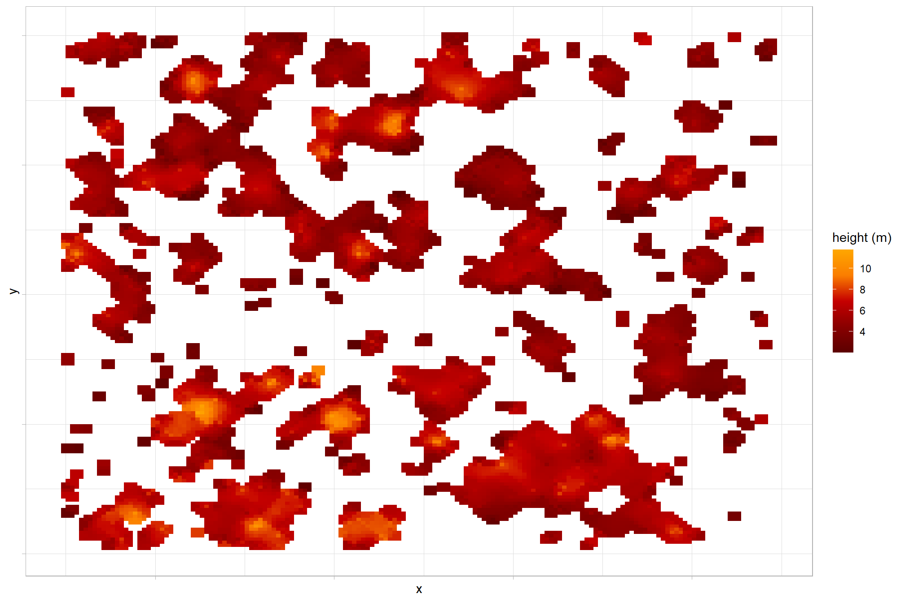
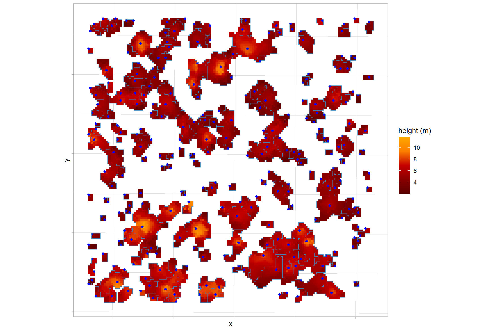
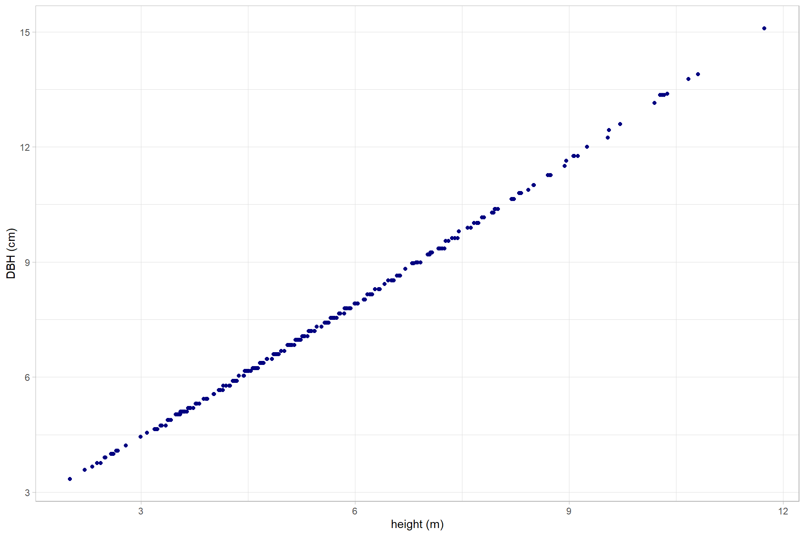
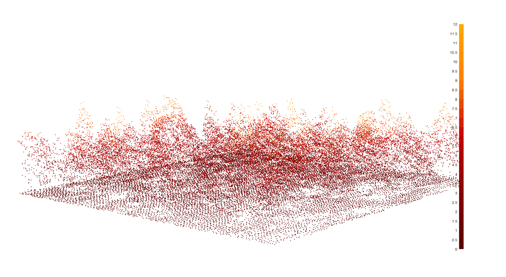
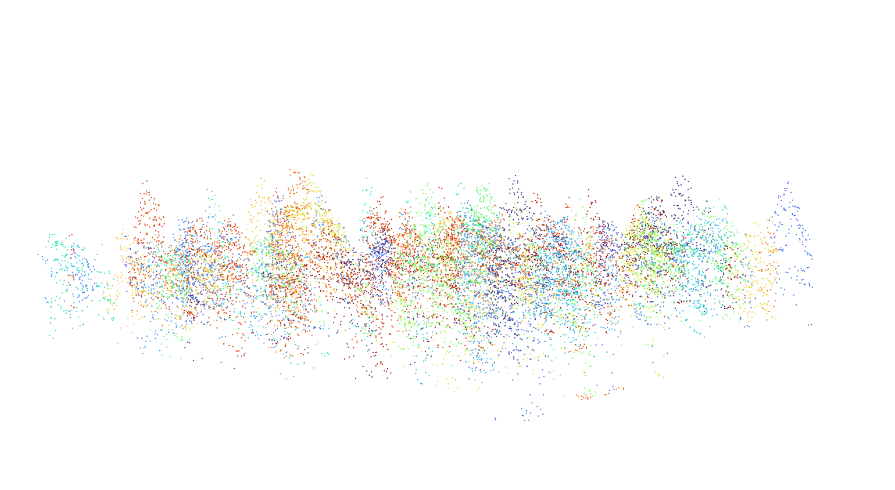

Section 2 Data Load and Explore
Load the standard libraries
# bread-and-butter
library(tidyverse) # the tidyverse
library(viridis) # viridis colors
library(harrypotter) # hp colors
library(scales) # work with number and plot scales
library(latex2exp)
# visualization
library(mapview) # interactive html maps
library(kableExtra) # tables
library(patchwork) # combine plots
library(ggnewscale) # ggnewscale
library(plot3D) # 3d plotting
library(rgl) # rgl plotting
# spatial analysis
library(terra) # raster
library(sf) # simple features
library(lidR) # lidar data
# models
library(brms) # bayesian modellingLoad the libraries from GitHub. Here we’ll load:
NeonTreeEvaluation: benchmark data set to evaluate lidar-based tree detection (Weinstein et al. 2021)cloud2trees: routines for processing point cloud data collected by airborne lidar to detect forest trees (Woolsey and Tinkham, 2024)LadderFuelsR: vertical fuel continuity quantification and crown base height (CBH) calculation (Viedma et al. 2024)lasR: complex processing pipelines on lidar data (Roussel 2024)
library(pak)
# load them
c("NeonTreeEvaluation", "cloud2trees", "LadderFuelsR", "lasR") %>%
# install and load
purrr::map(function(x){
# locations
df <- dplyr::tibble(
p = c("NeonTreeEvaluation", "cloud2trees", "LadderFuelsR", "lasR")
, l = c(
"weecology/NeonTreeEvaluation_package"
, "georgewoolsey/cloud2trees"
, "olgaviedma/LadderFuelsR"
, "r-lidar/lasR"
)
)
# install if needed
if(!require(x, character.only = T)){
pak::pkg_install(
pkg = df %>% dplyr::filter(tolower(p)==tolower(x)) %>% dplyr::pull(l)
, upgrade = T
)
}
# load
library(x, character.only = T)
})2.1 NeonTreeEvaluation
Weinstein et al. (2021) developed:
a benchmark dataset of individual canopy crowns derived from multi-sensor imagery in the National Ecological Observatory Network (Table 1) that provides: 1) co-registered remote sensing data from multiple sensors (LiDAR, RGB imagery, and hyperspectral imagery) to allow comparisons of methods based on any single sensor (e.g., for LiDAR based methods), or any combination of sensors (e.g., combining RGB and hyperspectral), and 2) three types of evaluation data to allow assessing both ‘tree detection’, defined as the identifying the location of individual trees using evaluation data with a point at the crown center , and ‘crown delineation’ defined as identifying the boundary edge of crowns across a broad range of forest types. The benchmark is designed to allow flexibility in both workflow and sensor selection. (p. 2)
Table 1. Summary of datasets included in the benchmark dataset. All sensor data has been cropped to the extent of NEON field sampling plots.

The objective of the present analysis is to evaluate the use of this benchmark data set (Weinstein et al. 2021) for a scientific publication describing a workflow to ingest raw LiDAR data and export a tabular tree list for use as an input to the QUIC-Fire physics-based fire spread model (Linn et al. 2020).
Weinstein et al. (2021) describe the LiDAR data in the benchmark data set:
The LiDAR data are 3D coordinates (~5 points/m2) that provide high resolution information about canopy crown shape and height. LiDAR data are stored as 1000m x 1000m.laz files (Fig 2). These files contain the x,y,z coordinates for each return, as well as metadata on return intensity and point classification. Boundaries of individual canopy crowns are often apparent due to gaps among neighboring trees or differences in height among overlapping canopy crowns. For more information on NEON LiDAR data processing see NEON technical document NEON.DOC.001292. Due to the large spatial coverage of the collection effort, the point density of the NEON LiDAR clouds is much lower than the point density used for most studies of crown detection models ([20, 21]; point densities of 8–1000 pt/m2). (p. 4)
what’s in this package?
## boxes_to_spatial_polygons : function (boxes, raster_object, project_boxes = TRUE)
## canopy_model : function (las, res = 0.5)
## check_download : function ()
## compute_precision_recall : function (ground_truth, predictions, threshold = 0.4, summarize = TRUE)
## download : function (training = FALSE, savedir = NULL, force = F)
## evaluate_field_crowns : function (predictions, summarize = TRUE, show = TRUE, project = FALSE)
## evaluate_field_stems : function (predictions, project = TRUE, show = T, summarize = T)
## evaluate_image_crowns : function (predictions, project = FALSE, show = TRUE, summarize = TRUE)
## field_crowns : function (x, show = TRUE, project_boxes = TRUE)
## get_data : function (plot_name, type)
## grand_summary : function (results, threshold = 0.4)
## image_crowns : function (predictions, show = TRUE, project_boxes = TRUE)
## list_annotations : function ()
## list_chm : function ()
## list_field_crowns : function ()
## list_field_stems : function ()
## list_rgb : function ()
## load_field_crown : function (plot_name, show = TRUE)
## load_ground_truth : function (plot_name, show = TRUE)
## xml_parse : function (path)
## zenodo_url : function (concept_rec_id = 3723356, rec_version = "latest", rec_id = NULL)
## zenodo_versions : function (concept_rec_id, arg_checks = TRUE)we first have to download evaluation data from the Zenodo archive (1GB), use the download() function to place the data in the correct package location. Download the much larger training data, set training=TRUE.
## NULLwhat data is in this package?
# what/where is this data
paste0(system.file(package = "NeonTreeEvaluation"),"/extdata/") %>%
list.files(recursive = T, pattern = ".*\\.(laz|las)$", full.names = F) %>%
sample() %>%
.[1:10]## [1] "NeonTreeEvaluation/evaluation/LiDAR/SCBI_038_2019.laz"
## [2] "NeonTreeEvaluation/evaluation/LiDAR/SJER_024_2019.laz"
## [3] "NeonTreeEvaluation/evaluation/LiDAR/WREF_024_2019.laz"
## [4] "NeonTreeEvaluation/evaluation/LiDAR/unnamed_plot_101.las"
## [5] "NeonTreeEvaluation/evaluation/LiDAR/UKFS_005_2020.laz"
## [6] "NeonTreeEvaluation/evaluation/LiDAR/LENO_026_2019.laz"
## [7] "NeonTreeEvaluation/evaluation/LiDAR/WREF_083_2019.laz"
## [8] "NeonTreeEvaluation/evaluation/LiDAR/NIWO_030_2019.laz"
## [9] "NeonTreeEvaluation/evaluation/LiDAR/UKFS_016_2020.laz"
## [10] "NeonTreeEvaluation/evaluation/LiDAR/unnamed_plot_38.las"For a list of NEON site abbreviations https://www.neonscience.org/field-sites/field-sites-map
NeonTreeEvaluation::list_annotations looks into package contents for ground truth annotations for the image-annotated crowns.
## [1] "2018_SJER_3_253000_4112000_image_581"
## [2] "SJER_005_2018"
## [3] "8"
## [4] "2018_SJER_3_255000_4108000_image_224"
## [5] "SJER_021_2018"
## [6] "SJER_059_2018"
## [7] "2018_SJER_3_252000_4106000_image_326"
## [8] "TEAK_045_2018"
## [9] "SJER_062_2018"
## [10] "2018_TEAK_3_322000_4102000_image_495"The field collected stems are individual points for each tree. They overlap with a subset of the sensor data. Use the NeonTreeEvaluation::list_field_stems function to determine which plots have stem data.
## [1] "SERC_006" "RMNP_019" "GUAN_054" "ABBY_003" "SERC_067" "STEI_008"
## [7] "DELA_037" "TALL_005" "TALL_017" "TALL_020"The NeonTreeEvaluation::crown_polygons function lists “field-annotated crowns” in which an observer annotates a polygon on the remote-sensing image on a tablet while standing in the field. From Ordway Swisher Biological Station, Florida and Mountain Lake Biological Station.
## Rows: 564## Columns: 7
## $ indvdID <chr> "MLBSE00007", "MLBSE00012", "MLBSE00027", "MLBSE00049", "…
## $ geometry <POLYGON [m]> POLYGON ((541983.5 4136174,..., POLYGON ((542127 …
## $ plotID <fct> MLBS_14, MLBS_37, MLBS_42, MLBS_1, MLBS_21, MLBS_23, MLBS…
## $ siteID <fct> MLBS, MLBS, MLBS, MLBS, MLBS, MLBS, MLBS, MLBS, MLBS, MLB…
## $ utmZone <fct> 17N, 17N, 17N, 17N, 17N, 17N, 17N, 17N, 17N, 17N, 17N, 17…
## $ plotEasting <dbl> 541986.3, 542125.7, 542267.8, 541883.4, 542053.1, 542075.…
## $ plotNorthing <dbl> 4136173, 4136182, 4136994, 4136586, 4136390, 4136400, 413…Sites with field annotated crowns
# crown_polygons
NeonTreeEvaluation::crown_polygons %>%
sf::st_drop_geometry() %>%
dplyr::count(siteID)## # A tibble: 2 × 2
## siteID n
## <fct> <int>
## 1 MLBS 106
## 2 OSBS 458hmmm this data only exists for two NEON sites
The woody vegetation structure data contains information on field estimated height and maximum crown diameter for the majority of field collected stems. We annotated all trees in the 40x40 m plot, regardless of health status, provided they were visible in the image.
## Rows: 37,776
## Columns: 67
## $ uid <fct> 411f5c60-79c4-41ef-b3d0-4e9b5365870e, 0d…
## $ namedLocation <fct> ABBY_063.basePlot.vst, ABBY_063.basePlot…
## $ date <fct> 2015-07-23, 2015-07-23, 2015-07-23, 2015…
## $ tagEventID <fct> vst_ABBY_2015, vst_ABBY_2015, vst_ABBY_2…
## $ domainID <fct> D16, D16, D16, D16, D16, D16, D16, D16, …
## $ siteID <fct> ABBY, ABBY, ABBY, ABBY, ABBY, ABBY, ABBY…
## $ plotID <fct> ABBY_063, ABBY_063, ABBY_063, ABBY_063, …
## $ subplotID <int> 39, 21, 21, 21, 39, 39, 39, 39, 39, 39, …
## $ nestedSubplotID <int> NA, NA, NA, NA, NA, NA, NA, NA, NA, NA, …
## $ pointID <int> 57, 21, 21, 21, 39, 41, 41, 41, 41, 41, …
## $ stemDistance <dbl> 3.0, 23.8, 23.8, 23.8, 26.2, 16.0, 16.0,…
## $ stemAzimuth <dbl> 111.0, 50.0, 50.0, 50.0, 45.4, 346.0, 34…
## $ recordType <fct> , , , , , , , , , , , , , , , , , , , , …
## $ individualID <fct> NEON.PLA.D16.ABBY.00441, NEON.PLA.D16.AB…
## $ supportingStemIndividualID <fct> NA, NA, NA, NA, NA, NA, NA, NA, NA, NA, …
## $ previouslyTaggedAs <fct> NA, NA, NA, NA, NA, NA, NA, NA, NA, NA, …
## $ samplingProtocolVersion <fct> NEON.DOC.000987vE, NEON.DOC.000987vE, NE…
## $ taxonID <fct> PSMEM, PSMEM, PSMEM, PSMEM, PSMEM, PSMEM…
## $ scientificName <fct> "Pseudotsuga menziesii (Mirb.) Franco va…
## $ taxonRank <fct> variety, variety, variety, variety, vari…
## $ identificationReferences <lgl> NA, NA, NA, NA, NA, NA, NA, NA, NA, NA, …
## $ morphospeciesID <fct> NA, NA, NA, NA, NA, NA, NA, NA, NA, NA, …
## $ morphospeciesIDRemarks <fct> NA, NA, NA, NA, NA, NA, NA, NA, NA, NA, …
## $ identificationQualifier <fct> , , , , , , , , , , , , , , , , , , , , …
## $ remarks <fct> "", "", "", "", "", "corrected using 201…
## $ measuredBy <fct> krian@neoninc.org, krian@neoninc.org, kr…
## $ recordedBy <fct> kzias@field-ops.org, kzias@field-ops.org…
## $ dataQF <fct> NA, NA, NA, NA, NA, NA, NA, NA, NA, NA, …
## $ plotType <fct> tower, tower, tower, tower, tower, tower…
## $ subtype <fct> basePlot, basePlot, basePlot, basePlot, …
## $ plotLatitude <dbl> 45.76074, 45.76037, 45.76037, 45.76037, …
## $ plotLongitude <dbl> -122.3303, -122.3303, -122.3303, -122.33…
## $ datum <fct> WGS84, WGS84, WGS84, WGS84, WGS84, WGS84…
## $ utmZone <fct> 10N, 10N, 10N, 10N, 10N, 10N, 10N, 10N, …
## $ plotEasting <dbl> 552081.2, 552079.1, 552079.1, 552079.1, …
## $ plotNorthing <dbl> 5067683, 5067642, 5067642, 5067642, 5067…
## $ horzUncert <dbl> 0.10, 0.10, 0.10, 0.10, 0.10, 0.10, 0.10…
## $ crdSource <fct> Geo 7X, Geo 7X, Geo 7X, Geo 7X, Geo 7X, …
## $ elevation <dbl> 363.22, 362.29, 362.29, 362.29, 362.34, …
## $ vertUncert <dbl> 0.10, 0.10, 0.10, 0.10, 0.10, 0.10, 0.10…
## $ nlcdClass <fct> evergreenForest, evergreenForest, evergr…
## $ appMods <fct> bbc|bgc|cdw|cfc|dhp|hbp|ltr|sme|vst, bbc…
## $ geometry <fct> "c(-122.330278, 45.76074)", "c(-122.3303…
## $ itcEasting <dbl> 552084.0, 552097.3, 552097.3, 552097.3, …
## $ itcNorthing <dbl> 5067682, 5067657, 5067657, 5067657, 5067…
## $ itcLongitude <dbl> -122.3302, -122.3301, -122.3301, -122.33…
## $ itcLatitude <dbl> 45.76073, 45.76051, 45.76051, 45.76051, …
## $ eventID <fct> vst_ABBY_2015, vst_ABBY_2016, vst_ABBY_2…
## $ tempShrubStemID <lgl> NA, NA, NA, NA, NA, NA, NA, NA, NA, NA, …
## $ tagStatus <fct> NA, ok, ok, ok, NA, NA, ok, ok, ok, NA, …
## $ growthForm <fct> single bole tree, single bole tree, sing…
## $ plantStatus <fct> "Standing dead", "Standing dead", "Dead,…
## $ stemDiameter <dbl> 40.0, 90.0, 89.1, 88.3, 105.0, 28.3, 29.…
## $ measurementHeight <int> 130, 130, 130, 130, 130, 130, 140, 130, …
## $ height <dbl> NA, 7.5, 6.7, 6.8, NA, NA, NA, 22.5, 21.…
## $ baseCrownHeight <dbl> NA, NA, NA, NA, NA, NA, NA, NA, NA, NA, …
## $ breakHeight <dbl> NA, NA, NA, 6.8, NA, NA, NA, NA, NA, NA,…
## $ breakDiameter <dbl> NA, NA, 61, NA, NA, NA, NA, NA, NA, NA, …
## $ maxCrownDiameter <dbl> NA, NA, NA, NA, NA, NA, NA, NA, NA, NA, …
## $ ninetyCrownDiameter <dbl> NA, NA, NA, NA, NA, NA, NA, NA, NA, NA, …
## $ canopyPosition <fct> NA, , NA, NA, NA, NA, , NA, NA, NA, , NA…
## $ shape <fct> , , , , , , , , , , , , , , , , , , , , …
## $ basalStemDiameter <dbl> NA, NA, NA, NA, NA, NA, NA, NA, NA, NA, …
## $ basalStemDiameterMsrmntHeight <int> NA, NA, NA, NA, NA, NA, NA, NA, NA, NA, …
## $ maxBaseCrownDiameter <dbl> NA, NA, NA, NA, NA, NA, NA, NA, NA, NA, …
## $ ninetyBaseCrownDiameter <dbl> NA, NA, NA, NA, NA, NA, NA, NA, NA, NA, …
## $ area <dbl> NA, NA, NA, NA, NA, NA, NA, NA, NA, NA, …Nice, there appears to be some useful data in here: uid, siteID, plotID, stemDiameter, height, maxCrownDiameter, ninetyCrownDiameter, baseCrownHeight, plantStatus, taxonID
Also, I just found that there is a hidden function in the package to filter the field tree data
…except for I’m going to change the minimum diameter from 15 cm to 10 cm
clean_field_data<-function(field){
field$area<-field$maxCrownDiameter*field$ninetyCrownDiameter
field<-field %>% filter(!is.na(itcEasting),!stringr::str_detect(eventID,"2014"),growthForm %in% c("single bole tree","multi-bole tree","small tree","sapling"),stemDiameter>10) %>%
droplevels() %>%
filter(height>3|is.na(height))
#Limit difference in heights
to_remove<-field %>% group_by(individualID) %>%
summarize(mean=mean(height),sum_difference = abs(sum(diff(height)))) %>%
filter(sum_difference > 8)
field<-field %>%
filter(!individualID %in% to_remove$individualID)
}clean this data and filter it
# filter it
field_trees <- NeonTreeEvaluation::field %>%
clean_field_data() %>%
dplyr::select(
uid, siteID, plotID, stemDiameter
, height, maxCrownDiameter, ninetyCrownDiameter
, baseCrownHeight, plantStatus, taxonID
) %>%
dplyr::filter(!is.na(maxCrownDiameter) & !is.na(height)) %>%
dplyr::mutate(CrownRadius = maxCrownDiameter/2)
# see it
field_trees %>% dplyr::glimpse()## Rows: 6,878
## Columns: 11
## $ uid <fct> b4305401-a7d9-4e79-afc4-a7f0c82e98d3, 346b66a5-cd8…
## $ siteID <fct> ABBY, ABBY, ABBY, ABBY, ABBY, ABBY, ABBY, ABBY, AB…
## $ plotID <fct> ABBY_007, ABBY_007, ABBY_007, ABBY_007, ABBY_007, …
## $ stemDiameter <dbl> 68.2, 54.1, 54.7, 58.0, 68.1, 20.2, 15.6, 19.6, 18…
## $ height <dbl> 49.6, 13.1, 22.9, 35.6, 50.2, 19.0, 10.8, 12.5, 9.…
## $ maxCrownDiameter <dbl> 9.7, 3.2, 9.1, 9.5, 11.3, 8.6, 4.5, 4.7, 5.2, 4.3,…
## $ ninetyCrownDiameter <dbl> 8.5, 0.0, 7.8, 7.9, 6.7, 7.6, 4.2, 4.5, 4.8, 3.8, …
## $ baseCrownHeight <dbl> NA, NA, NA, NA, NA, NA, NA, NA, NA, NA, NA, NA, NA…
## $ plantStatus <fct> "Live", "Dead, broken bole", "Live", "Live", "Live…
## $ taxonID <fct> PSMEM, PSMEM, PSMEM, PSMEM, PSMEM, PSMEM, PSMEM, P…
## $ CrownRadius <dbl> 4.85, 1.60, 4.55, 4.75, 5.65, 4.30, 2.25, 2.35, 2.…what are these data?
## stemDiameter height maxCrownDiameter ninetyCrownDiameter
## Min. : 15.10 Min. : 3.10 Min. : 0.100 Min. : 0.000
## 1st Qu.: 18.60 1st Qu.: 9.90 1st Qu.: 3.800 1st Qu.: 2.900
## Median : 23.30 Median :13.30 Median : 6.200 Median : 4.700
## Mean : 27.44 Mean :14.97 Mean : 6.975 Mean : 5.296
## 3rd Qu.: 31.80 3rd Qu.:18.90 3rd Qu.: 9.200 3rd Qu.: 7.000
## Max. :255.00 Max. :52.90 Max. :62.000 Max. :31.000
## NA's :115
## baseCrownHeight CrownRadius
## Min. : NA Min. : 0.050
## 1st Qu.: NA 1st Qu.: 1.900
## Median : NA Median : 3.100
## Mean :NaN Mean : 3.487
## 3rd Qu.: NA 3rd Qu.: 4.600
## Max. : NA Max. :31.000
## NA's :6878status?
## plantStatus n
## 1 Dead, broken bole 75
## 2 Downed 2
## 3 Live 5486
## 4 Live, other damage 135
## 5 Live, broken bole 43
## 6 Live, disease damaged 199
## 7 Live, insect damaged 157
## 8 Live, physically damaged 154
## 9 No longer qualifies 12
## 10 Removed 1
## 11 Standing dead 614keep only live
field_trees <- field_trees %>%
dplyr::filter(plantStatus %>% tolower() %>% stringr::str_starts("live"))taxonID?
## taxonID n
## 1 PICOL 535
## 2 PIEN 500
## 3 ACRU 367
## 4 ABLAL 333
## 5 LITU 270
## 6 QURU 267
## 7 LIST2 238
## 8 TSCA 211
## 9 QUAL 197
## 10 PIPA2 177
## 11 ACSA3 137
## 12 PIFL2 132
## 13 OXYDE 117
## 14 PSMEM 96
## 15 PITA 95
## 16 PSME 91
## 17 CATO6 88
## 18 PIMA 84
## 19 POTR5 81
## 20 JUNIP 80let’s see the height versus diameter relationship
field_trees %>%
ggplot(mapping = aes(x = height, y = stemDiameter)) +
geom_point() +
scale_x_continuous(limits = c(0,NA)) +
scale_y_continuous(limits = c(0,NA)) +
theme_light()
let’s get conifer trees only???
….sure, i found a NEON plant list with the codes: https://data.neonscience.org/taxonomic-lists?taxonTypeCode=PLANT
conifer_spp <-
readr::read_csv(
"../data/OS_TAXON_PLANT-20220330T142149.csv"
, show_col_types = F
, progress = F
) %>%
dplyr::filter(
tolower(family) %in% c(
"pinaceae", "podocarpaceae", "araucariaceae"
, "taxaceae", "cephalotaxaceae", "taxodiaceae", "cupressaceae"
)
) %>%
dplyr::mutate(
taxonID = toupper(taxonID)
, vernacularName = tolower(vernacularName)
, genus = stringr::str_to_title(genus)
) %>%
dplyr::distinct(taxonID, vernacularName, genus)
# huh?
conifer_spp %>% dplyr::slice_sample(n = 10)## # A tibble: 10 × 3
## taxonID vernacularName genus
## <chr> <chr> <chr>
## 1 POCO3 yucca plum pine Podocarpus
## 2 PIST3 southwestern white pine Pinus
## 3 TOTA florida nutmeg Torreya
## 4 PIPI7 italian stone pine Pinus
## 5 JUVIS southern redcedar Juniperus
## 6 PIST eastern white pine Pinus
## 7 TABR2 pacific yew Taxus
## 8 PIMA black spruce Picea
## 9 TSUGA hemlock Tsuga
## 10 MEGL8 dawn redwood Metasequoiafilter that field tree list for conifers
check those conifers height and diameter
conifer_trees %>%
ggplot(mapping = aes(x = height, y = stemDiameter, color = genus)) +
geom_point() +
scale_x_continuous(limits = c(0,NA)) +
scale_y_continuous(limits = c(0,NA)) +
facet_wrap(facets = dplyr::vars(genus)) +
scale_color_viridis_d(option = "turbo") +
theme_light() +
theme(legend.position = "none")
what about this crown area data?
conifer_trees %>%
ggplot(mapping = aes(x = CrownRadius, y = genus, fill = genus)) +
geom_boxplot(width = 0.7, outliers = F) +
scale_fill_viridis_d(option = "turbo") +
theme_light() +
theme(legend.position = "none")
radius data
## 1% 5% 50% 95% 99%
## 3.500 5.600 11.500 25.210 41.753## 1% 5% 50% 95% 99%
## 0.8500 1.1000 2.0000 5.1000 6.6255let’s model crown radius based on height
lm(formula = CrownRadius ~ height, data = conifer_trees) %>%
broom::tidy() %>%
kableExtra::kbl(digits = 4) %>%
kableExtra::kable_styling()| term | estimate | std.error | statistic | p.value |
|---|---|---|---|---|
| (Intercept) | 1.0900 | 0.0464 | 23.5090 | 0 |
| height | 0.1014 | 0.0032 | 31.7895 | 0 |
plot this
conifer_trees %>%
ggplot(mapping = aes(x = height, y = CrownRadius)) +
geom_point() +
geom_smooth(method = "lm") +
scale_x_continuous(limits = c(0,NA)) +
scale_y_continuous(limits = c(0,NA)) +
theme_light() +
theme(legend.position = "none")
what about a non-linear model?
crown_height_model <- brms::brm(
formula = brms::bf(
formula = CrownRadius ~ (b1 * height) + height^b2
, b1 + b2 ~ 1
, nl = TRUE # !! specify non-linear
)
, data = conifer_trees
, family = brms::brmsfamily("Gamma")
, iter = 6000, warmup = 3000, chains = 4
, cores = lasR::half_cores()
, file = "../data/crown_height_model"
)
# plot(crown_height_model)
summary(crown_height_model)## Family: gamma
## Links: mu = log; shape = identity
## Formula: CrownRadius ~ (b1 * height) + height^b2
## b1 ~ 1
## b2 ~ 1
## Data: conifer_trees (Number of observations: 2750)
## Draws: 4 chains, each with iter = 6000; warmup = 3000; thin = 1;
## total post-warmup draws = 12000
##
## Regression Coefficients:
## Estimate Est.Error l-95% CI u-95% CI Rhat Bulk_ESS Tail_ESS
## b1_Intercept 0.04 0.00 0.04 0.05 1.00 5784 6848
## b2_Intercept -0.55 0.03 -0.61 -0.51 1.00 5397 5756
##
## Further Distributional Parameters:
## Estimate Est.Error l-95% CI u-95% CI Rhat Bulk_ESS Tail_ESS
## shape 5.72 0.15 5.43 6.02 1.00 6131 5494
##
## Draws were sampled using sampling(NUTS). For each parameter, Bulk_ESS
## and Tail_ESS are effective sample size measures, and Rhat is the potential
## scale reduction factor on split chains (at convergence, Rhat = 1).## write out model estimates to tabular file
#### extract posterior draws to a df
brms::as_draws_df(
crown_height_model
, variable = c("^b_", "shape")
, regex = TRUE
) %>%
# quick way to get a table of summary statistics and diagnostics
posterior::summarize_draws(
"mean", "median", "sd"
, ~quantile(.x, probs = c(
0.05, 0.95
, 0.025, 0.975
))
, "rhat"
) %>%
dplyr::mutate(
variable = stringr::str_remove_all(variable, "_Intercept")
, formula = summary(crown_height_model)$formula %>%
as.character() %>%
.[1]
) %>%
write.csv(
"../data/crown_height_model.csv"
, row.names = F
)plot this

what if we try to plot it with a function using the regression coefficients?
ws_fn <- function(x) {
y = dplyr::case_when(
is.na(x) ~ 1e-3 # requires non-null
, x < 0 ~ 1e-3 # requires positive
, x < 2.5 ~ 1 # set lower bound
, x > 40 ~ 6.7 # set upper bound
# , TRUE ~ 0.75 + (x * 0.14)
, TRUE ~ exp( (0.0446*x) + (x^-0.555) ) # used gamma regression so exp the result
)
return(y)
}plot it
ggplot2::ggplot() + ggplot2::xlim(0,60) + ggplot2::ylim(0,NA) +
ggplot2::geom_point(data = conifer_trees, mapping = aes(y = CrownRadius, x = height)) +
ggplot2::geom_function(fun = ws_fn, lwd = 1.5, color = "blue")
NeonTreeEvaluation::get_data is a set of utility functions for finding the path of benchmark data on disk
## [1] "C:/Program Files/R/R-4.3.0/library/NeonTreeEvaluation/extdata/NeonTreeEvaluation/evaluation/LiDAR/RMNP_047.laz"let’s pull out all sites with .laz data and create a data frame for tracking purposes
las_df <-
paste0(system.file(package = "NeonTreeEvaluation"),"/extdata/") %>%
list.files(recursive = T, pattern = ".*\\.(laz|las)$", full.names = T) %>%
unique() %>%
dplyr::as_tibble() %>%
dplyr::rename(f_path = 1) %>%
# create some other variables
dplyr::mutate(
f_nm = f_path %>% basename() %>% stringr::str_remove_all("\\.(laz|las)$")
, plot_nm = f_nm %>% # this matches the file name with the plot name
toupper() %>%
stringr::str_extract(
pattern = NeonTreeEvaluation::list_field_stems() %>%
toupper() %>%
paste(collapse = "|")
)
, neon_site = plot_nm %>% stringr::word(start = 1, sep = fixed("_"))
) %>%
dplyr::filter(!is.na(plot_nm)) %>% # keep only las files with field stems
dplyr::select(neon_site, plot_nm, f_nm, f_path)
# what?
las_df %>% dplyr::glimpse()## Rows: 278
## Columns: 4
## $ neon_site <chr> "ABBY", "ABBY", "ABBY", "ABBY", "ABBY", "BART", "BART", "BAR…
## $ plot_nm <chr> "ABBY_003", "ABBY_008", "ABBY_010", "ABBY_023", "ABBY_068", …
## $ f_nm <chr> "ABBY_003_2018", "ABBY_008_2018", "ABBY_010_2018", "ABBY_023…
## $ f_path <chr> "C:/Program Files/R/R-4.3.0/library/NeonTreeEvaluation/extda…2.1.1 Explore LiDAR data from package
which NEON sites have data?
las_df %>%
dplyr::count(neon_site) %>%
dplyr::arrange(desc(n)) %>%
dplyr::mutate(neon_site = forcats::fct_reorder(neon_site, n)) %>%
# plot
ggplot(aes(y = neon_site, x = n, fill = n)) +
geom_col(width = 0.7) +
labs(y = "NEON site", x = "lidar data plots") +
ggthemes::scale_fill_continuous_tableau("Gray") +
# paletteer::scale_fill_paletteer_c("harrypotter::gryffindor", direction = -1) +
ggthemes::theme_clean() +
theme(legend.position = "none")
where is this data?
get_site_bbox <- function(site, dta = las_df) {
# read the las files for a site
las_ctg = dta %>%
dplyr::filter(neon_site == site) %>%
dplyr::pull(f_path) %>%
lidR::readLAScatalog()
# bbox that site
if( is.na( sf::st_crs(las_ctg@data) ) ){
return(NULL)
}else{
las_ctg@data %>%
sf::st_bbox() %>%
sf::st_as_sfc() %>%
sf::st_as_sf() %>%
dplyr::mutate(neon_site = site) %>%
sf::st_set_crs(sf::st_crs(las_ctg@data)) %>%
sf::st_transform(crs = paste0("EPSG:", 5070))
}
}
# take this for a spin
las_df %>%
dplyr::pull(neon_site) %>%
unique() %>%
purrr::map(get_site_bbox) %>%
dplyr::bind_rows() %>%
dplyr::left_join(
las_df %>%
dplyr::group_by(neon_site) %>%
dplyr::summarise(n = dplyr::n())
, by = "neon_site"
) %>%
st_centroid() %>%
mapview::mapview(
zcol = "n"
, layer.name = "LiDAR plots"
, label = c("neon_site")
, col.regions = viridis::mako(10, direction = -1)
)load one las data
f_temp = las_df %>% dplyr::slice_sample(n = 1) %>% dplyr::pull(f_path)
las_temp = lidR::readLAS(f_temp)
# quick summary
las_temp## class : LAS (v1.2 format 3)
## memory : 3.9 Mb
## extent : 256652, 256692, 2163715, 2163755 (xmin, xmax, ymin, ymax)
## coord. ref. : WGS 84 / UTM zone 5N
## area : 1669 m²
## points : 54 thousand points
## density : 32.34 points/m²
## density : 8.87 pulses/m²## Rows: 53,971
## Columns: 19
## $ X <dbl> 256652.4, 256652.3, 256652.7, 256653.0, 256653.4, 25…
## $ Y <dbl> 2163716, 2163716, 2163716, 2163716, 2163716, 2163715…
## $ Z <dbl> 1712.01, 1710.00, 1712.02, 1710.31, 1710.48, 1709.78…
## $ gpstime <dbl> 513919.6, 513919.6, 513919.6, 513919.6, 513919.6, 51…
## $ Intensity <int> 12, 2, 1, 19, 1, 5, 80, 314, 314, 265, 179, 313, 295…
## $ ReturnNumber <int> 2, 3, 3, 4, 4, 4, 4, 2, 2, 2, 2, 2, 1, 1, 1, 2, 2, 3…
## $ NumberOfReturns <int> 3, 3, 3, 4, 4, 4, 4, 2, 2, 2, 2, 2, 1, 1, 1, 2, 2, 3…
## $ ScanDirectionFlag <int> 0, 0, 0, 0, 0, 0, 1, 1, 1, 1, 1, 1, 1, 1, 1, 1, 1, 1…
## $ EdgeOfFlightline <int> 0, 0, 0, 0, 0, 0, 0, 0, 0, 0, 0, 0, 0, 0, 0, 0, 0, 0…
## $ Classification <int> 5, 2, 5, 1, 1, 2, 2, 2, 2, 2, 2, 2, 2, 2, 2, 2, 2, 2…
## $ Synthetic_flag <lgl> FALSE, FALSE, FALSE, FALSE, FALSE, FALSE, FALSE, FAL…
## $ Keypoint_flag <lgl> FALSE, FALSE, FALSE, FALSE, FALSE, FALSE, FALSE, FAL…
## $ Withheld_flag <lgl> FALSE, FALSE, FALSE, FALSE, FALSE, FALSE, FALSE, FAL…
## $ ScanAngleRank <int> 0, 0, 0, 0, 0, -1, -1, -1, -1, -1, -1, -1, -1, -1, -…
## $ UserData <int> 21, 0, 21, 5, 7, 0, 0, 0, 0, 0, 0, 0, 0, 0, 0, 0, 0,…
## $ PointSourceID <int> 26311, 26311, 26311, 26311, 26311, 26311, 26311, 263…
## $ R <int> 10752, 10752, 45056, 45312, 50688, 26880, 35072, 509…
## $ G <int> 14336, 14336, 49664, 49920, 52224, 32768, 35840, 527…
## $ B <int> 13056, 13056, 45568, 45056, 50688, 33792, 30208, 506…summarize x, y, z
## X Y Z
## Min. :256652 Min. :2163716 Min. :1704
## 1st Qu.:256662 1st Qu.:2163726 1st Qu.:1712
## Median :256673 Median :2163736 Median :1721
## Mean :256672 Mean :2163736 Mean :1720
## 3rd Qu.:256682 3rd Qu.:2163746 3rd Qu.:1726
## Max. :256692 Max. :2163756 Max. :1737plot this las
plot3D::scatter3D(
x = las_temp@data$X
, y = las_temp@data$Y
, z = las_temp@data$Z
, colvar = las_temp@data$Z
, pch = 19, cex = 0.3
, colkey = F
, phi = 0.5
)
let’s look at the classification (see table 5 here)
## Classification n
## <int> <int>
## 1: 1 2231
## 2: 2 7240
## 3: 5 44500plot color by classification
plot3D::scatter3D(
x = las_temp@data$X
, y = las_temp@data$Y
, z = las_temp@data$Z
, colvar = las_temp@data$Classification
, pch = 19, cex = 0.3
, colkey = F
, phi = 0.5
)
2.2 cloud2trees
The cloud2trees package provides routines for processing point cloud data (.las|.laz format) to detect forest trees.
let’s use it for one of the data sets from a conifer forest in the NeonTreeEvaluation benchmark
# get one file
(f_temp <- las_df %>%
dplyr::filter(neon_site=="RMNP") %>% # rocky mtn national park
dplyr::slice_sample(n = 1) %>%
dplyr::pull(f_path))## [1] "C:/Program Files/R/R-4.3.0/library/NeonTreeEvaluation/extdata/NeonTreeEvaluation/evaluation/LiDAR/RMNP_019_2018.laz"what is this data?
## Rows: 37,151
## Columns: 16
## $ X <dbl> 458190.6, 458190.2, 458189.9, 458202.3, 458202.0, 45…
## $ Y <dbl> 4449607, 4449607, 4449607, 4449607, 4449607, 4449607…
## $ Z <dbl> 2651.887, 2651.754, 2651.798, 2647.305, 2647.261, 26…
## $ gpstime <dbl> 424047.8, 424047.8, 424047.8, 424047.8, 424047.8, 42…
## $ Intensity <int> 67, 75, 209, 239, 200, 215, 249, 25, 221, 159, 43, 3…
## $ ReturnNumber <int> 1, 1, 1, 1, 1, 1, 1, 1, 2, 1, 2, 1, 2, 3, 1, 1, 1, 1…
## $ NumberOfReturns <int> 2, 2, 2, 1, 1, 1, 1, 2, 2, 2, 2, 3, 3, 3, 1, 1, 1, 1…
## $ ScanDirectionFlag <int> 0, 0, 0, 0, 0, 0, 0, 0, 0, 0, 0, 0, 0, 0, 0, 0, 0, 0…
## $ EdgeOfFlightline <int> 0, 0, 0, 0, 0, 0, 0, 0, 0, 0, 0, 0, 0, 0, 0, 0, 0, 0…
## $ Classification <int> 5, 5, 5, 2, 2, 2, 2, 1, 2, 5, 2, 1, 1, 2, 2, 2, 2, 2…
## $ Synthetic_flag <lgl> FALSE, FALSE, FALSE, FALSE, FALSE, FALSE, FALSE, FAL…
## $ Keypoint_flag <lgl> FALSE, FALSE, FALSE, FALSE, FALSE, FALSE, FALSE, FAL…
## $ Withheld_flag <lgl> FALSE, FALSE, FALSE, FALSE, FALSE, FALSE, FALSE, FAL…
## $ ScanAngleRank <int> 12, 12, 12, 13, 12, 12, 12, 12, 12, 12, 12, 12, 12, …
## $ UserData <int> 48, 47, 47, 0, 0, 0, 0, 19, 0, 21, 0, 17, 11, 0, 0, …
## $ PointSourceID <int> 26, 26, 26, 26, 26, 26, 26, 26, 26, 26, 26, 26, 26, …We can plot the point cloud with and color by the point height
lidR::plot(
las_temp
, color = "Z", breaks = "quantile", bg = "white", legend = T
, pal = harrypotter::hp(n=50, house = "gryffindor")
)
notice the Z values are in meters above sea level
2.2.1 Get tree list and normalized cloud
We’ll use the cloud2trees::cloud2trees() function to get a tree list from the lidar data with a regional estimate of the DBH because we enabled the estimate_tree_dbh parameter. Also returned is a canopy height model (CHM) raster and because we enabled the keep_intrmdt parameter we’ll get the normalized point cloud data as well.
cloud2trees_ans <- cloud2trees::cloud2trees(
input_las_dir = f_temp
, output_dir = "../data"
, estimate_tree_dbh = T
, keep_intrmdt = T
)let’s see what we got
## [1] "crowns_sf" "treetops_sf" "dtm_rast" "chm_rast"we got a CHM
# could make an easy plot with...
# terra::plot(cloud2trees_ans$chm_rast)
# ...but we'll customize and save it as our base plot
plt_chm <-
ggplot() +
geom_tile(
data = cloud2trees_ans$chm_rast %>%
as.data.frame(xy=T) %>%
dplyr::rename(f=3)
, mapping = aes(x=x,y=y,fill=f)
) +
harrypotter::scale_fill_hp("gryffindor", name = "height (m)") +
theme_light() +
theme(
axis.text = element_blank()
)
# view
plt_chm
we also got tree top points
and we got tree crowns
plt_chm +
geom_sf(data = cloud2trees_ans$treetops_sf, shape = "x", color = "blue") +
geom_sf(data = cloud2trees_ans$crowns_sf, fill = NA, color = "steelblue")
there is data on the individual trees in the crowns and tree tops data (which are the same data but one spaltial polygons and the other is spatial points).
## Rows: 166
## Columns: 20
## $ treeID <chr> "1_458168.6_4449639.6", "2_458183.1_4449639.…
## $ tree_height_m <dbl> 3.519, 4.647, 3.115, 3.519, 6.586, 6.199, 6.…
## $ tree_x <dbl> 458168.6, 458183.1, 458170.4, 458169.1, 4581…
## $ tree_y <dbl> 4449640, 4449640, 4449639, 4449639, 4449639,…
## $ crown_area_m2 <dbl> 0.3125, 0.3750, 0.8750, 0.5625, 1.6875, 1.00…
## $ geometry <GEOMETRY [m]> POLYGON ((458168.5 4449640,..., POL…
## $ fia_est_dbh_cm <dbl> 5.489898, 6.921271, 4.967770, 5.489898, 9.82…
## $ fia_est_dbh_cm_lower <dbl> 3.503191, 4.484949, 3.180029, 3.503191, 6.30…
## $ fia_est_dbh_cm_upper <dbl> 7.792940, 9.867350, 7.089027, 7.792940, 14.0…
## $ dbh_cm <dbl> 5.489898, 6.921271, 4.967770, 5.489898, 9.82…
## $ is_training_data <lgl> FALSE, FALSE, FALSE, FALSE, FALSE, FALSE, FA…
## $ dbh_m <dbl> 0.05489898, 0.06921271, 0.04967770, 0.054898…
## $ radius_m <dbl> 0.02744949, 0.03460636, 0.02483885, 0.027449…
## $ basal_area_m2 <dbl> 0.002367110, 0.003762371, 0.001938264, 0.002…
## $ basal_area_ft2 <dbl> 0.02547957, 0.04049816, 0.02086347, 0.025479…
## $ ptcld_extracted_dbh_cm <dbl> NA, NA, NA, NA, NA, NA, NA, NA, NA, NA, NA, …
## $ ptcld_predicted_dbh_cm <dbl> NA, NA, NA, NA, NA, NA, NA, NA, NA, NA, NA, …
## $ comp_trees_per_ha <dbl> NA, NA, NA, NA, NA, NA, NA, NA, NA, NA, NA, …
## $ comp_relative_tree_height <dbl> NA, NA, NA, NA, NA, NA, NA, NA, NA, NA, NA, …
## $ comp_dist_to_nearest_m <dbl> NA, NA, NA, NA, NA, NA, NA, NA, NA, NA, NA, …let’s check the height to DBH relationship
cloud2trees_ans$crowns_sf %>%
ggplot(mapping = aes(x = tree_height_m, y = dbh_cm)) +
geom_point(color = "navy") +
labs(x = "height (m)", y = "DBH (cm)") +
theme_light()
this all looks great.
let’s check the normalized point cloud. for that we’ll dig in the output directory from the cloud2trees::cloud2trees() function (see that output_dir parameter).
(n_f_temp <- list.files(
"../data/point_cloud_processing_temp/02_normalize/"
, pattern = ".las"
, full.names = T
))## [1] "../data/point_cloud_processing_temp/02_normalize/RMNP_019_2018_normalize.las"plot it to check that it is height normalized
lidR::plot(
nlas_temp
, color = "Z", bg = "white", legend = T
, pal = harrypotter::hp(n=50, house = "gryffindor")
)
nice! let’s remove the ground points to check out potential vegetation
nlas_temp %>%
lidR::filter_poi(Classification!=2) %>%
lidR::plot(
color = "Z", breaks = "quantile", bg = "white", legend = T
, pal = harrypotter::hp(n=50, house = "gryffindor")
)
that’s a great workflow, guy.
i’m not your guy, buddy.
2.3 LadderFuelsR
The LadderFuelsR package (Viedma et al. 2024) is described as enabling the use of “LiDAR data and the LadderFuelsR package…[to] provide an automated tool for analysing the vertical fuel structure of a forest and to calculate crown base height (CBH) at tree-level, among other parameters” (p.1).
let’s check what’s in this package
## calculate_gaps_perc : function (LAD_profiles, min_height = 1.5)
## get_cbh_metrics : function (effective_LAD, min_height = 1.5, hdepth1_height = 2.5, verbose = TRUE)
## get_cum_break : function (LAD_profiles, cbh_metrics, threshold = 75, min_height = 1.5,
## verbose = TRUE)
## get_depths : function (LAD_profiles, distance_metrics, step = 1, min_height = 1.5, verbose = TRUE)
## get_distance : function (gap_cbh_metrics, gaps_perc, step = 1, min_height = 1.5, verbose = TRUE)
## get_effective_gap : function (effective_depth, number_steps = 1, min_height = 1.5, verbose = TRUE)
## get_gaps_fbhs : function (LAD_profiles, step = 1, min_height = 1.5, perc_gap = 25, perc_base = 25,
## verbose = TRUE)
## get_layers_lad : function (LAD_profiles, effective_distances, threshold = 10, step = 1,
## min_height = 1.5, verbose = TRUE)
## get_plots_cbh_bp : function (LAD_profiles, cummulative_LAD, min_height = 1.5)
## get_plots_cbh_LAD : function (LAD_profiles, cbh_metrics, min_height = 1.5)
## get_plots_cbh_lastdist : function (LAD_profiles, cbh_metrics, min_height = 1.5)
## get_plots_cbh_maxdist : function (LAD_profiles, cbh_metrics, min_height = 1.5)
## get_plots_effective : function (LAD_profiles, effective_LAD, min_height = 1.5)
## get_plots_gap_fbh : function (LAD_profiles, gap_cbh_metrics, min_height = 1.5)
## get_real_depths : function (effective_fbh, step = 1, min_height = 1.5, verbose = TRUE)
## get_real_fbh : function (depth_metrics, step = 1, number_steps = 1, min_height = 1.5,
## verbose = TRUE)
## get_renamed_df : function (df)
## get_renamed0_df : function (df)2.3.1 Prep for the package
For this package we need to do some cleaning of our las data and our polygon crown data. We need to attach the treeID column from our spatial crowns to the las data using lidR::merge_spatial(). This function allows for only polygons so we need to get rid of the multipolygons in the crown data. We’ll keep the largest part of the multipolygon as the smaller part is usually residual pixels from the CHM. We also generate a tree_index as a numeric id which is needed by the LadderFuelsR package since treeID is character.
# the lidR::merge_spatial requires only polygons so we need to rid the multipolygons
crowns_sf_poly <-
# start with only polygons
cloud2trees_ans$crowns_sf %>%
dplyr::filter(sf::st_geometry_type(geometry)=="POLYGON") %>%
# union on cleaned multipolygons
dplyr::bind_rows(
cloud2trees_ans$crowns_sf %>%
dplyr::filter(sf::st_geometry_type(geometry)=="MULTIPOLYGON") %>%
sf::st_cast(to = "POLYGON", do_split = T, warn = F) %>%
dplyr::mutate(axxx = sf::st_area(geometry)) %>% # axxx is so we don't overwrite a column
dplyr::group_by(treeID) %>%
dplyr::filter(axxx == max(axxx)) %>%
dplyr::ungroup() %>%
dplyr::select(-axxx)
) %>%
# generate a treeID index because it needs to be numeric
dplyr::ungroup() %>%
dplyr::mutate(tree_index = dplyr::row_number())does it look good?
plt_chm +
geom_sf(data = cloud2trees_ans$treetops_sf, shape = "x", color = "blue") +
geom_sf(data = crowns_sf_poly, fill = NA, color = "steelblue")now we’ll attach the treeID column to the normalized las file and keep only the points that fall within a tree crown.
m_nlas_temp <- lidR::merge_spatial(
las = nlas_temp
, source = crowns_sf_poly
, attribute = "tree_index"
) %>%
lidR::filter_poi(!is.na(tree_index)) %>%
lidR::filter_poi(Classification!=2)
# what is this data?
m_nlas_temp@data %>% dplyr::glimpse()## Rows: 10,514
## Columns: 17
## $ X <dbl> 458190.2, 458189.9, 458200.0, 458199.7, 458199.9, 45…
## $ Y <dbl> 4449607, 4449607, 4449606, 4449607, 4449607, 4449607…
## $ Z <dbl> 4.685, 4.739, 2.126, 1.725, 1.123, 2.091, 1.882, 1.2…
## $ gpstime <dbl> 424047.8, 424047.8, 424047.8, 424047.8, 424047.8, 42…
## $ Intensity <int> 75, 209, 159, 33, 47, 160, 133, 14, 19, 152, 130, 41…
## $ ReturnNumber <int> 1, 1, 1, 1, 2, 1, 1, 1, 1, 2, 1, 1, 1, 1, 1, 1, 1, 2…
## $ NumberOfReturns <int> 2, 2, 2, 3, 3, 2, 2, 2, 3, 3, 1, 4, 2, 2, 2, 2, 3, 3…
## $ ScanDirectionFlag <int> 0, 0, 0, 0, 0, 0, 0, 0, 0, 0, 0, 0, 0, 0, 0, 0, 0, 0…
## $ EdgeOfFlightline <int> 0, 0, 0, 0, 0, 0, 0, 0, 0, 0, 0, 0, 0, 0, 0, 0, 0, 0…
## $ Classification <int> 5, 5, 5, 1, 1, 5, 1, 1, 5, 5, 5, 5, 5, 5, 5, 5, 5, 5…
## $ Synthetic_flag <lgl> FALSE, FALSE, FALSE, FALSE, FALSE, FALSE, FALSE, FAL…
## $ Keypoint_flag <lgl> FALSE, FALSE, FALSE, FALSE, FALSE, FALSE, FALSE, FAL…
## $ Withheld_flag <lgl> FALSE, FALSE, FALSE, FALSE, FALSE, FALSE, FALSE, FAL…
## $ ScanAngleRank <int> 12, 12, 12, 12, 12, 12, 12, 12, 11, 11, 11, 11, 12, …
## $ UserData <int> 47, 47, 21, 17, 11, 21, 19, 13, 66, 53, 53, 60, 48, …
## $ PointSourceID <int> 26, 26, 26, 26, 26, 26, 26, 26, 26, 26, 26, 26, 26, …
## $ tree_index <int> 104, 104, 101, 101, 101, 97, 101, 101, 110, 110, 93,…plot the las data colored by tree_index
m_nlas_temp %>%
lidR::plot(
color = "tree_index", bg = "white", legend = F
, pal = viridis::turbo(n = m_nlas_temp@data$tree_index %>% unique() %>% length()) %>% sample()
)
check it for one tree
m_nlas_temp %>%
lidR::filter_poi(
tree_index ==
# get the tree with the most points
m_nlas_temp@data %>%
dplyr::count(tree_index) %>%
dplyr::filter(n == max(n)) %>%
dplyr::slice_head(n=1) %>%
dplyr::pull(tree_index)
) %>%
lidR::plot(color = "tree_index", bg = "white", legend = F)